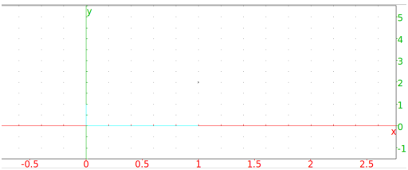

13.6.10 The barycenter in the plane: barycenter
See Section 14.4.6 for barycenters of objects in space.
The barycenter command returns and draws the barycenter of a set of
weighted points.
-
barycenter takes an unspecified number of arguments:
L1,L2,…,Ln, a sequence of lists of length two, where
each list consists of a point and a weight. This information can
also be given as a matrix with two columns (the first column the
points and the second column the weights) or a matrix with two rows
and more than two columns.
- barycenter(L1,L2,…,Ln) draws and
returns the barycenter of the weighted points.
Example
The following commands will draw the barycenter of the
points (1,1) with weight 1, (1,−1) with weight 1 and (1,4)
with weight 2.
Input:
barycenter([1 + i,1],[1 - i,1],[1 + 4*i, 2])
or:
barycenter([[1 + i,1],[1 - i,1],[1 + 4*i, 2]])
or:
barycenter([[1 + i, 1 - i, 1 + 4*i],[1,1,2]])
Output:
